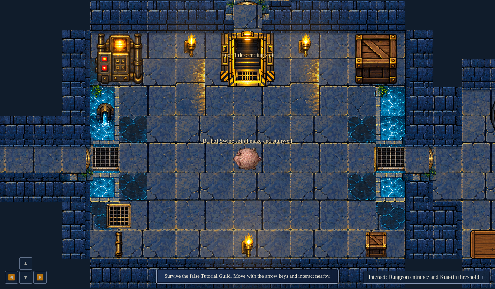
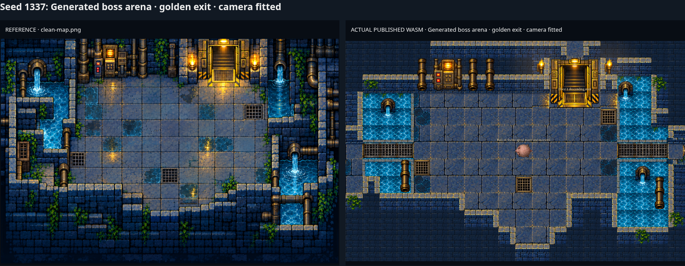
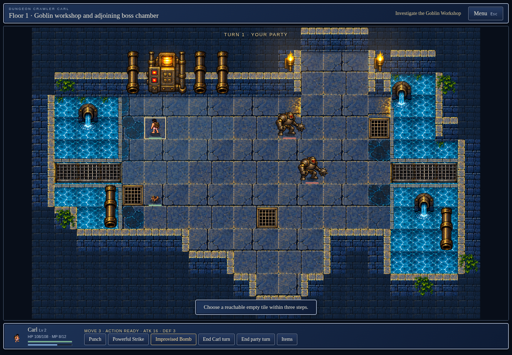

Original reference / prior implementation


Actual locally published .NET WebAssembly browser captures for dev commit 920de3b8fa2bee7daeb3c41e44933c0f2e3a6865. The original clean map is a visual reference. Earlier stages retain their labels; only the final stage uses the final generated 18×11 room and matching battle board.
Room captures use a disclosed camera-only framing override. Final environment captures crop the actual screenshot to the generated room plus one tile border (20×13 tiles) and hide external DOM controls/toast/battle banner. All world geometry, objects, sprites and labels remain actual. Full UI captures, keyboard doorway/bridge crossings and real combat evidence are retained. No game state, draws or pixels are fabricated.






Two-seed arena/combat/collision report · Door/bridge keyboard report · Existing required first-encounter test · Original / before / final and both-seed closeups